Lugares Cercanos
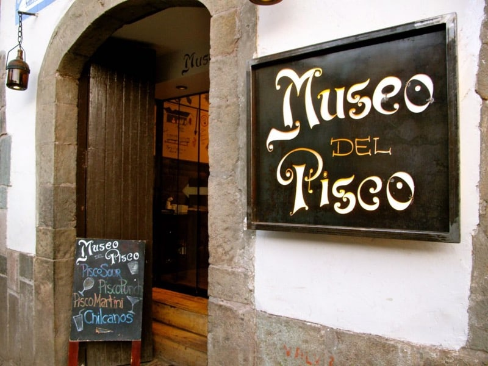
- Museo del Pisco
- Disfruta de los platos y bebidas tradicionales peruanos en un...
Ver más
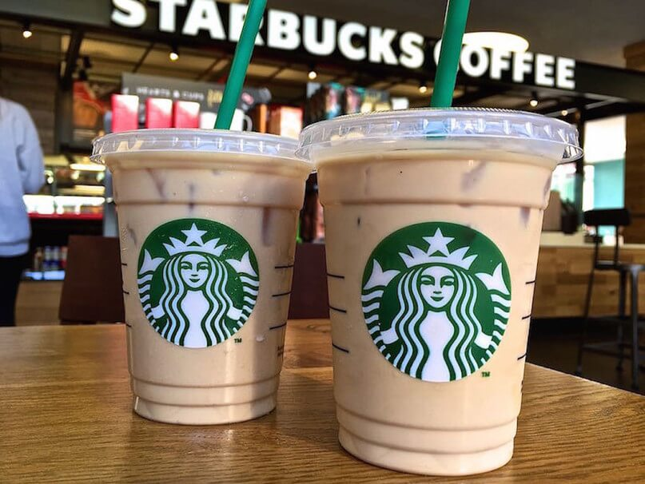
- Starbucks
- Una buena opción para descansar y disfrutar de un buen café peruano...
Ver más
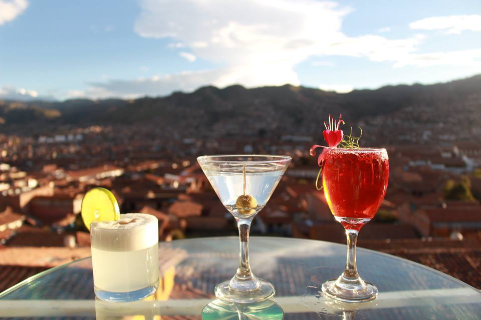
- Limbus
- Limbus dispone de la mejor vista panorámica de la capital imperial...
Ver más
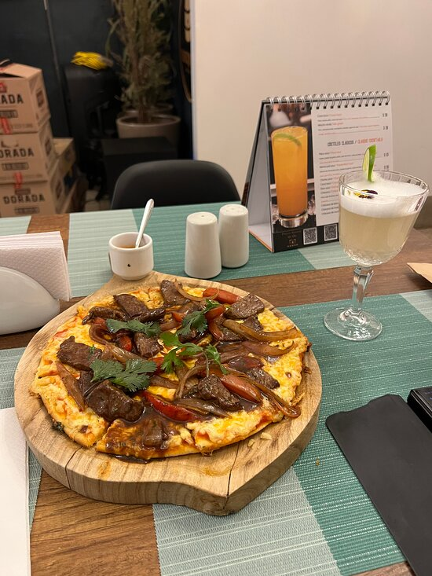
- Maná Restobar
- Maná café restobar tiene la mejor comida, los mejores cocteles y...
Ver más
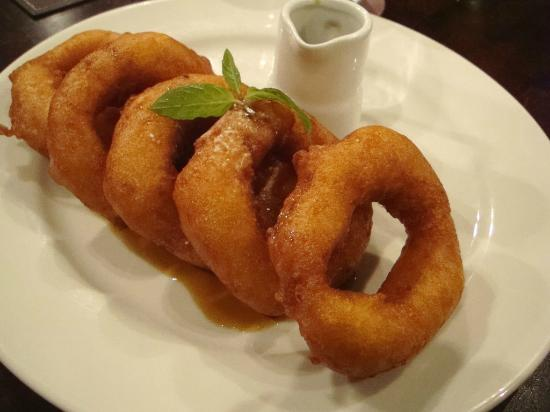
- Picarones Ruinas
- Disfruta de este picaron al estilo cusqueño que logra una...
Ver más
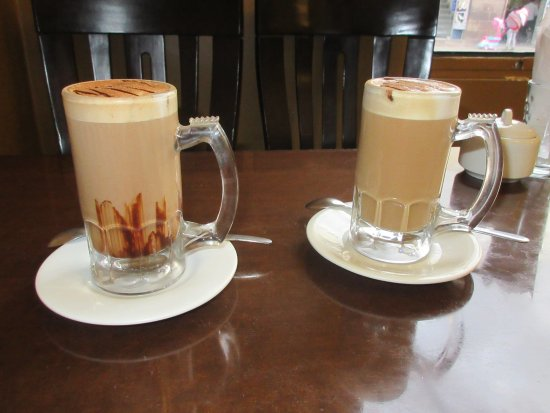
- Café Ayllu
- El Ayllu nos ofrece un muy buen café cusqueño, que puedes...
Ver más
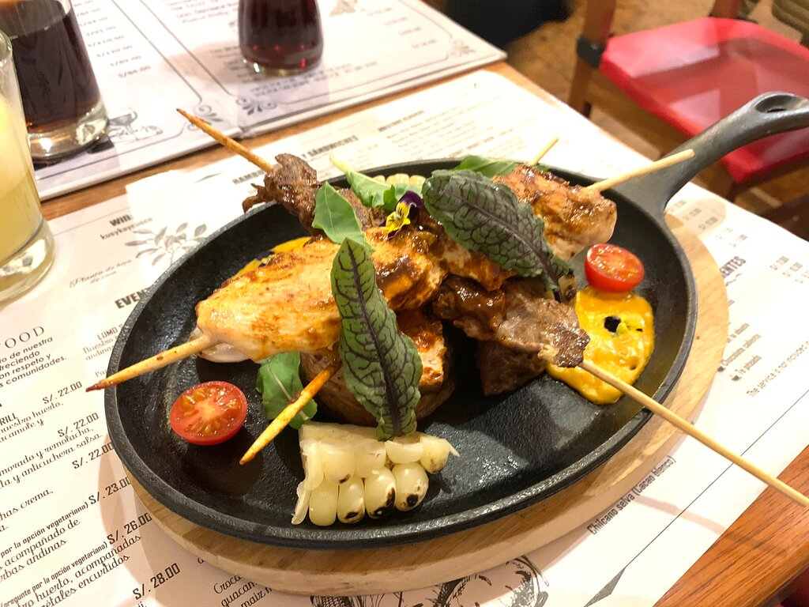
- Kusykay
- Kusykay ofrece un excelente servicio de atención personalizado
Ver más
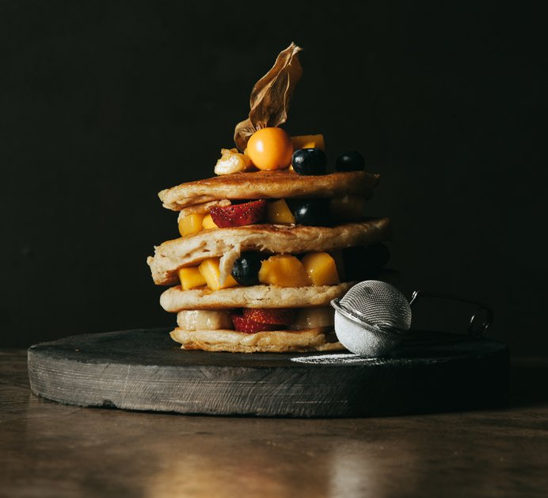
- Green Point
- Somos un restaurante plant-based de comida peruana en Cusco
Ver más
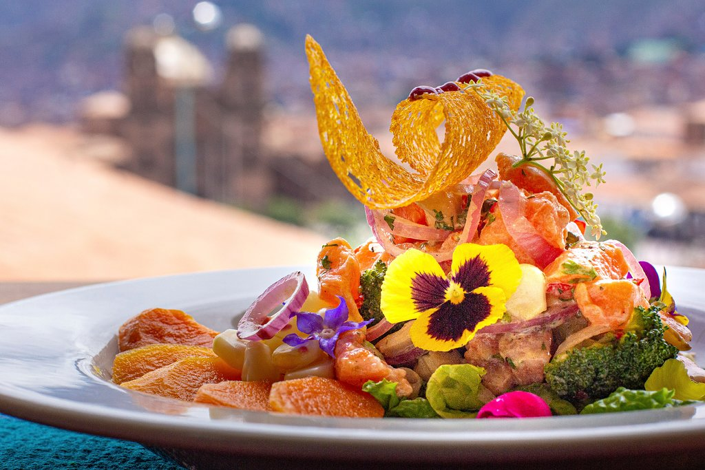
- Yaku Cocina de Altura
- Descubre nuevos sabores de la cocina peruana...
Ver más
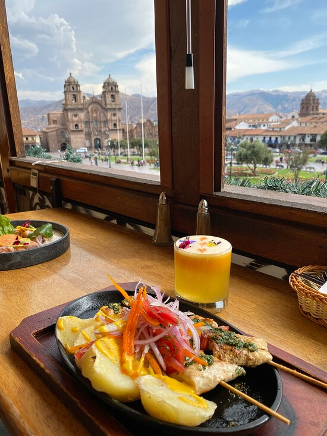
- Fusion Andina Restaurant
- Su cocina peruana atrae a curiosos que buscan nuevas experiencias
Ver más
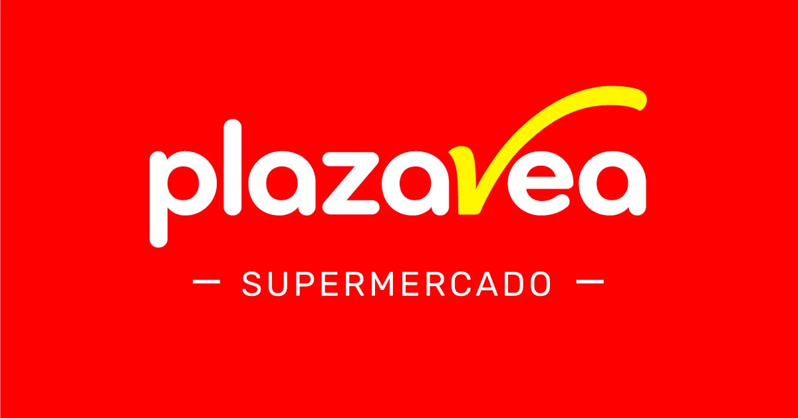
- Plaza Vea
- Plaza Vea es uno de los lideres del mercado de supermercados...
Ver más
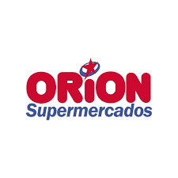
- Orion
- Orion ofrece al público una gran variedad, bajos precios...
Ver más
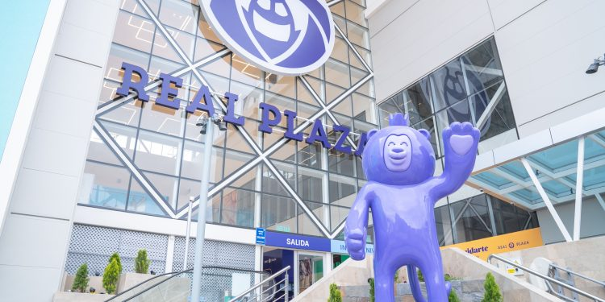
- Real Plaza
- Real Plaza es uno de los centros comerciale mas grandes...
Ver más
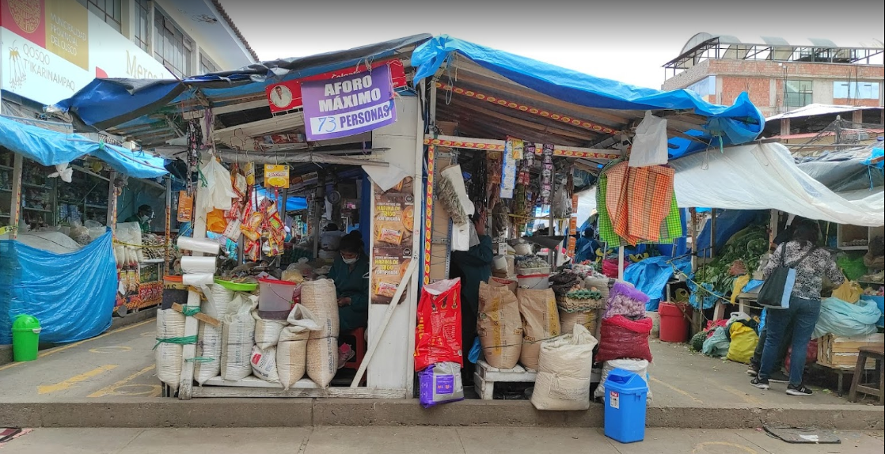
- Mercado Rosaspata
- Rosaspata es un mercado ubicado cerca del Centro Histórico
Ver más